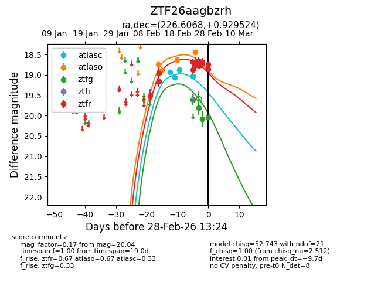
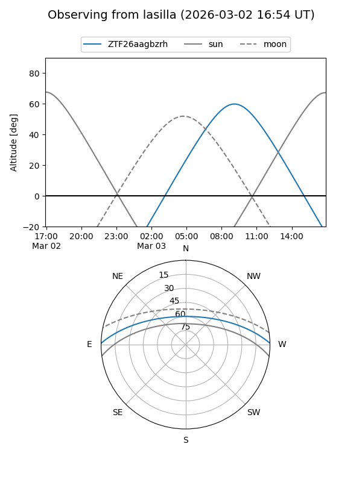
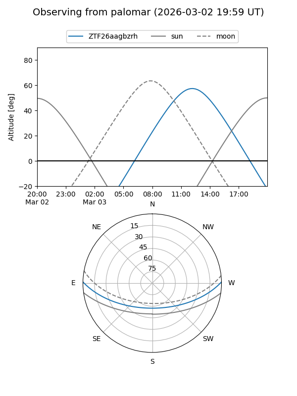
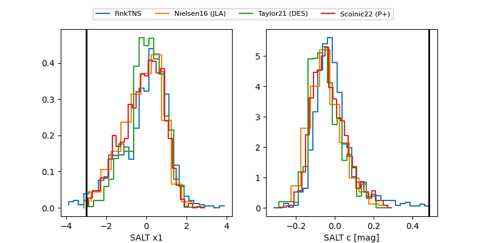

ZTF26aagbzrh
Target ZTF26aagbzrh at 2026-02-28 13:25
Aliases and brokers:
FINK: link
Lasair: link
ALeRCE: link
alt names
ZTF26aagbzrh (ztf,fink_ztf)
Coordinates:
equatorial (ra, dec) = 226.6068,+0.92952
equatorial (HMS+DMS) = 15:06:25.64,+00:55:46.29
galactic (l, b) = (359.6469,+48.35881)
Flags:
Photometry:
last atlasc=19.04, atlaso=18.44, ztfg=20.04, ztfr=18.74
4 atlasc, 4 atlaso, 4 ztfg, 13 ztfr detections
Lightcurve

Visibility


Additional plots
